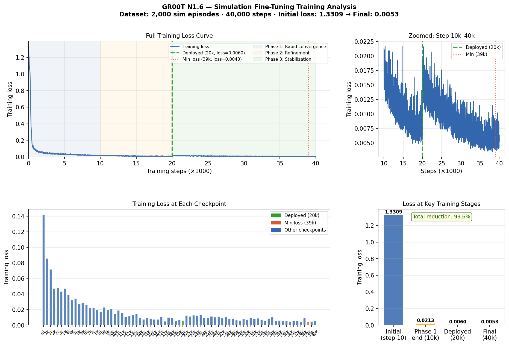
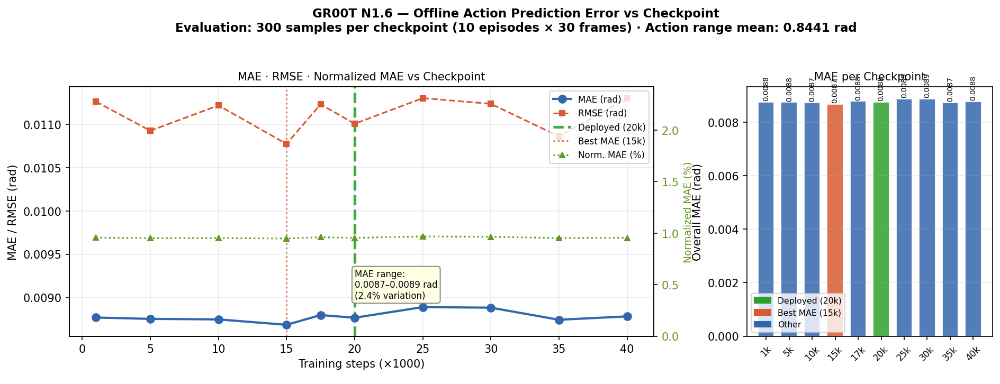
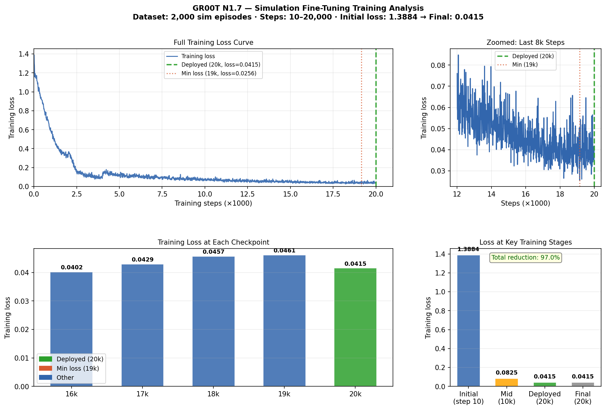
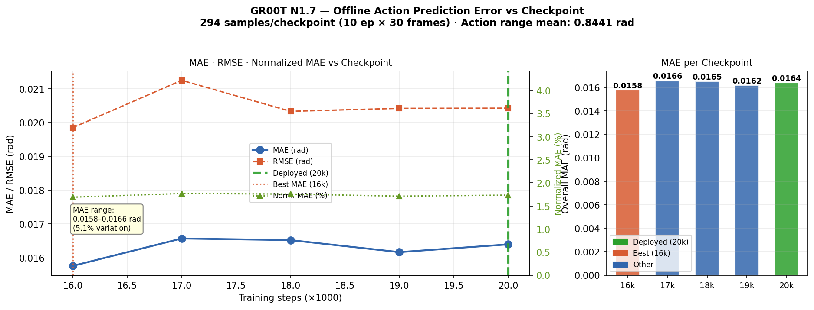
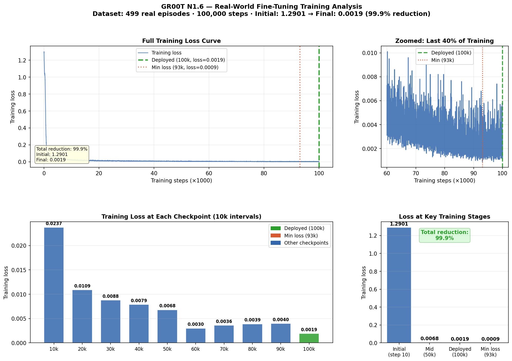
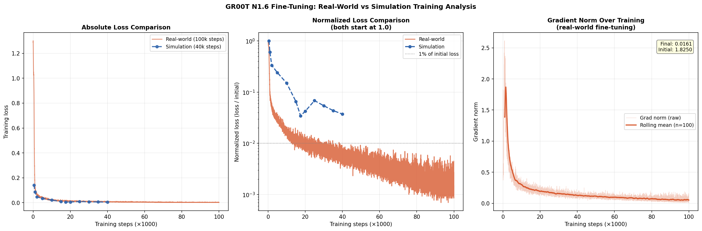
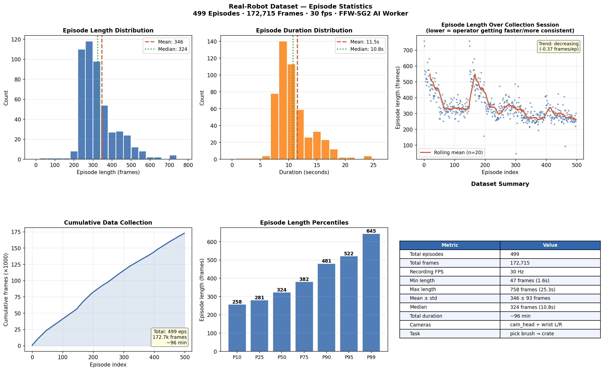
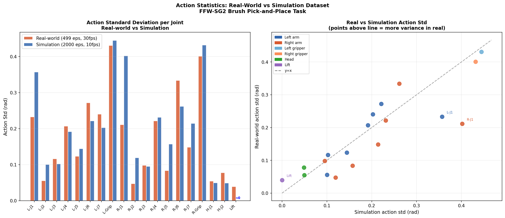
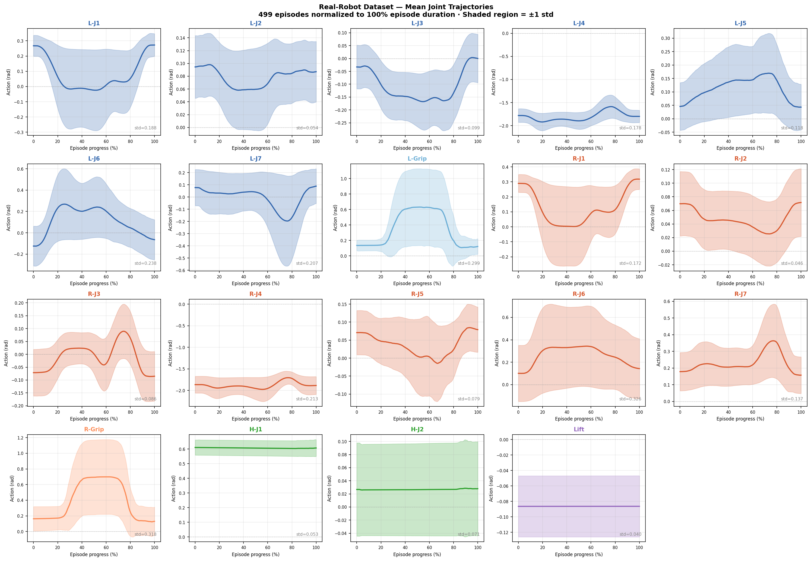
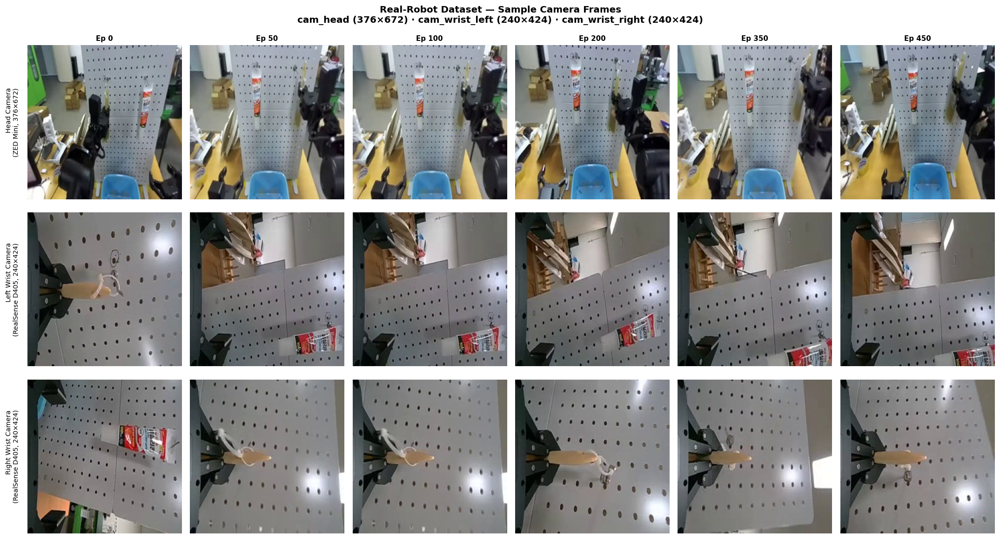

Closed-loop VLA evaluation on the ROBOTIS FFW-SG2 AI Worker — simulation and real-robot deployment of GR00T N1.6 and N1.7 for pegboard brush pick-and-place.
50 randomized trials per model in IsaacLab — object slot, table pose, lighting, background, and robot joint state all randomized each episode. Task: "Put the yellow paint brush into the crate."
GR00T N1.7 shows 1.86× higher offline NormMAE than N1.6 (1.45% vs 0.94%), yet both achieve identical 100% simulation success. This confirms that offline action prediction error is not a reliable proxy for closed-loop task performance in diffusion-based VLA policies.
On the physical robot, GR00T N1.6 achieves 88% success with zero semantic failures across 100 continuous trials — the policy correctly identifies the brush and activates the correct arm in every single trial.
| Model | Sim success | Real-robot | State input | Wrong arm | Wrong object | Offline MAE |
|---|---|---|---|---|---|---|
| GR00T N1.6 | 100% (50/50) | 88% (100 trials) | ✓ structured | 0% | 0% | 0.94% |
| GR00T N1.7 | 100% (50/50) | Sim only (EA) | ✓ structured | 0% | 0% | 1.45% |
| StarVLA (no-state) | 52% (26/50) | — | ✗ | 0% | 0% | 6.61% |
| StarVLA (state) | 28% (14/50) | — | sin-cos φ(q) | 24% | 14% | 4.82% |
| OpenVLA | Excluded — action dimension collapse in dataset | |||||
GR00T N1.6 · 100 continuous trials on physical FFW-SG2 · single uninterrupted session. Human assistant repositions brush after each trial — no robot reset between trials.
The 12 percentage point gap between simulation (100%) and real robot (88%) is entirely attributable to physical contact dynamics — grasp compliance and placement precision — that the IsaacLab rigid-body simulation does not model. The policy transfers perfectly at the semantic level: correct arm selection, correct object identification, and consistent behavior throughout all 100 continuous trials with no performance degradation.
Grasp drops are distributed randomly (not concentrated in early or late trials), confirming the failure is stochastic contact variability rather than policy drift over the continuous session.
Fine-tuning loss curves, offline MAE evaluation, and training comparison across simulation and real-world runs.






| Model | Steps | Initial loss | Final loss | Reduction | Hardware | Epochs |
|---|---|---|---|---|---|---|
| N1.6 (sim) | 40,000 | 1.3309 | 0.0053 | 99.6% | RTX 5090 | ~0.5 |
| N1.7 (sim) | 20,000 | 1.3884 | 0.0415 | 97.0% | RTX 5090 | ~0.8 |
| N1.6 (real) | 100,000 | 1.2901 | 0.0019 | 99.9% | DGX Spark | 1.0 |
Two datasets used in this work — simulation-generated for strategy learning and real-world teleoperation for physical appearance and contact distribution.
Dongkkka/sim2real_1224_brush_pick



Closed-loop inference on the physical FFW-SG2 AI Worker and in IsaacLab simulation. Task: "Put the yellow paint brush into the crate."
GR00T N1.6 grasps the paint brush from the pegboard and places it into the crate in a single continuous motion at 100 Hz.
Brush contacted and briefly grasped but dropped during extraction from the pegboard ring holder — the dominant failure mode (10/100 trials).
100% success across 50 randomized trials in the matched IsaacLab pegboard environment.
GR00T N1.7 (Cosmos-Reason2-2B backbone) achieves identical 100% simulation success. Real-robot deployment deferred pending GA release.
Place video files in videos/ folder alongside this HTML file.